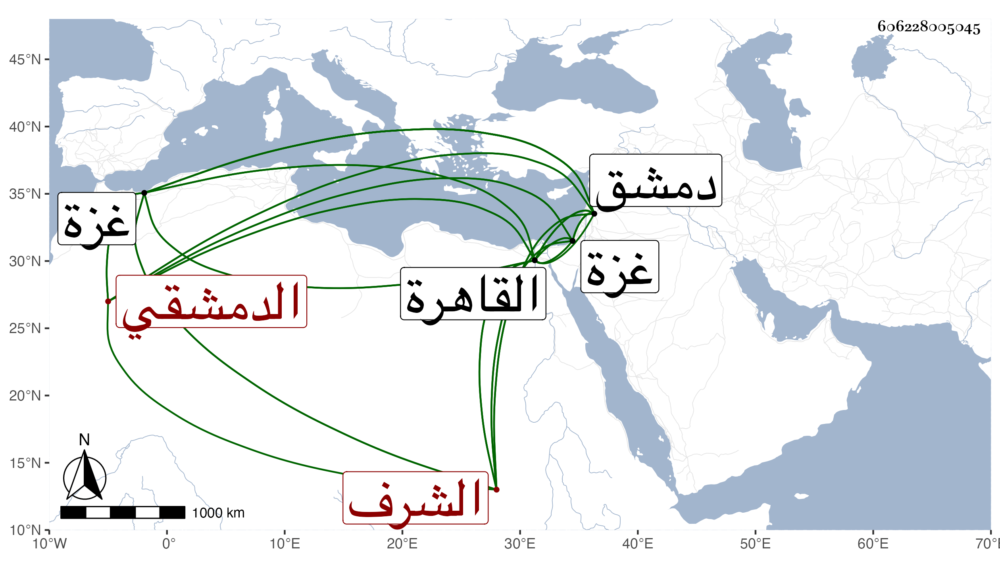

0902Sakhawi.DawLamic.ITO20230111-ara1.EIS1600.606228005045
Biography ID: 606228005045
957
يحيى بن بركة بن محمد بن لاقي الشرف الدمشقي ويعرف بابن لاقي . كان أبوه من أمراء دمشق فنشأ هو في نعمة ثم خدم أستادارا وصار أيضا من أمرائها وصحب نائبها المؤيد شيخ ولزمه وقدم معه القاهرة بعد قتل الناصر في سنة خمس عشرة فلما تسلطن عمله مهمندارا بل أضاف إليه التكلم في أستادارية الحلال وصار من أعيان الدولة إلى أن تنكر عليه جقمق الأرغونشاوي الدوادار الكبير بسبب كلام نقله عنه للمؤيد تبين بطلانه فرسم المؤيد حينئذ بنفيه لدمشق فأخرج إليها على حمار فمرض في أثناء الطريق . ومات بالقرب من غزة في صفر سنة اثنتين وعشرين فحمل إلى غزة فدفن بها واستقر بعده في المهمندارية إبرهيم المدعو خرز . وذكره شيخنا في إنبائه وقال أنه قدم القاهرة مرارا .
